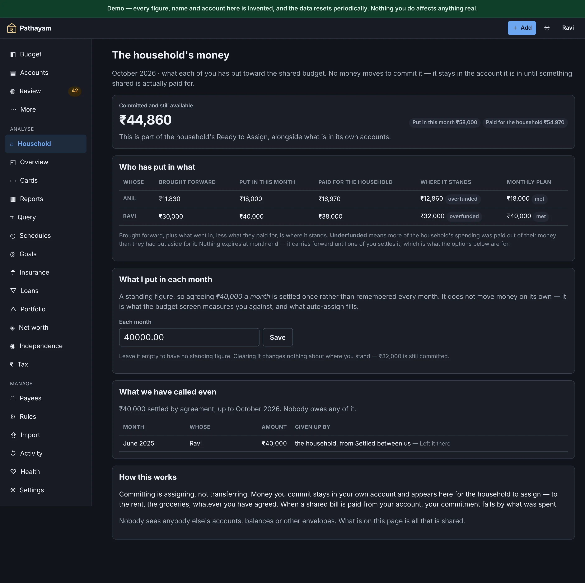
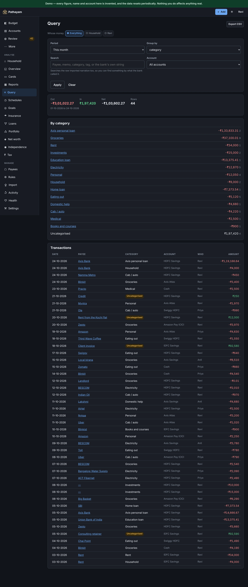
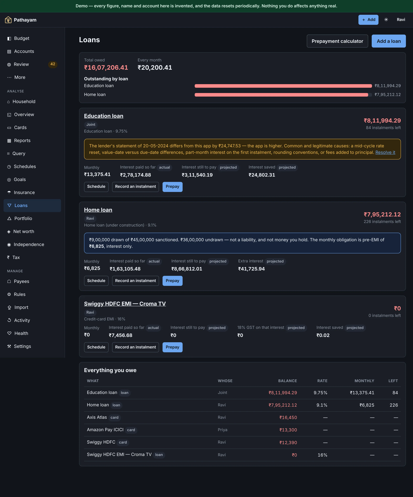
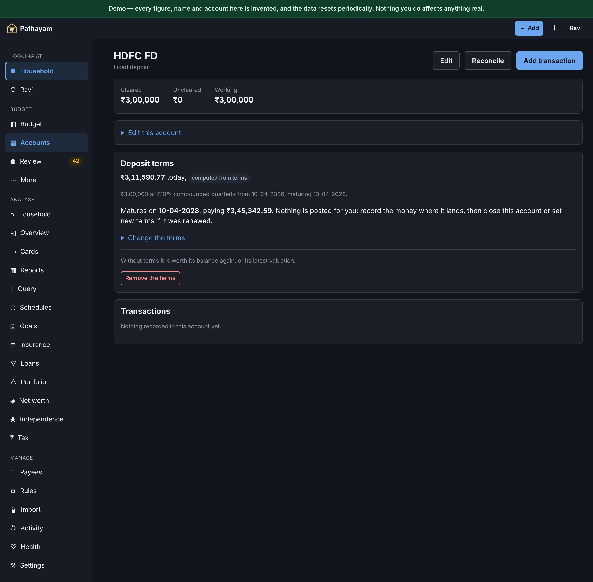
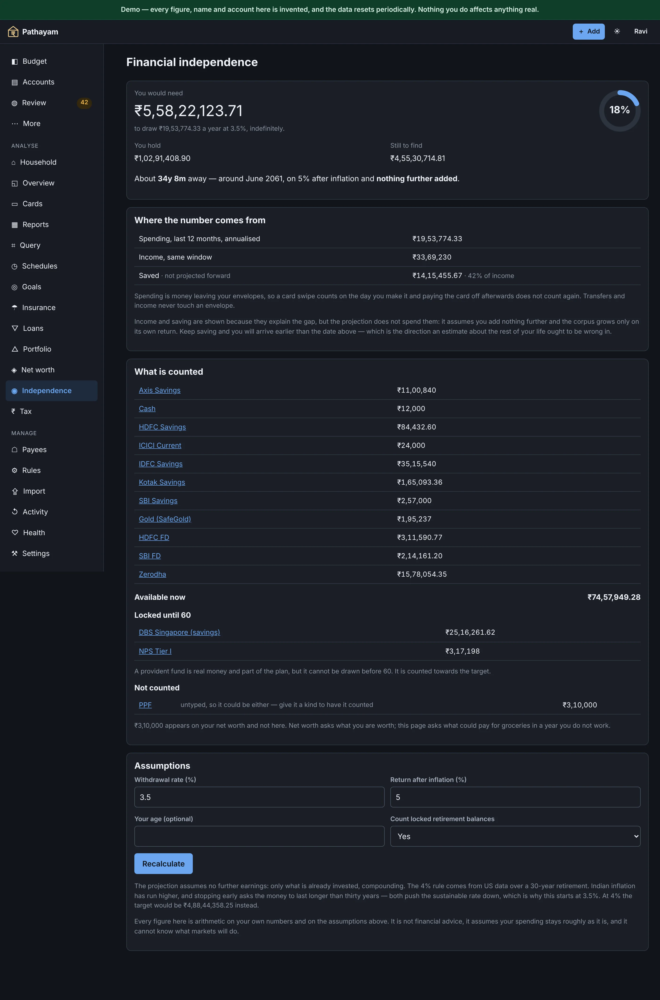
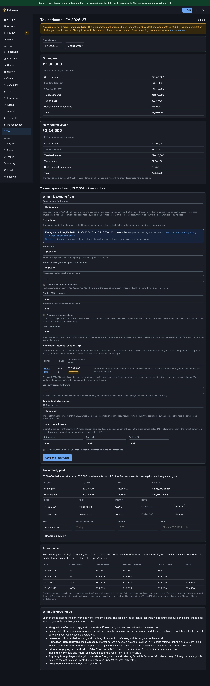
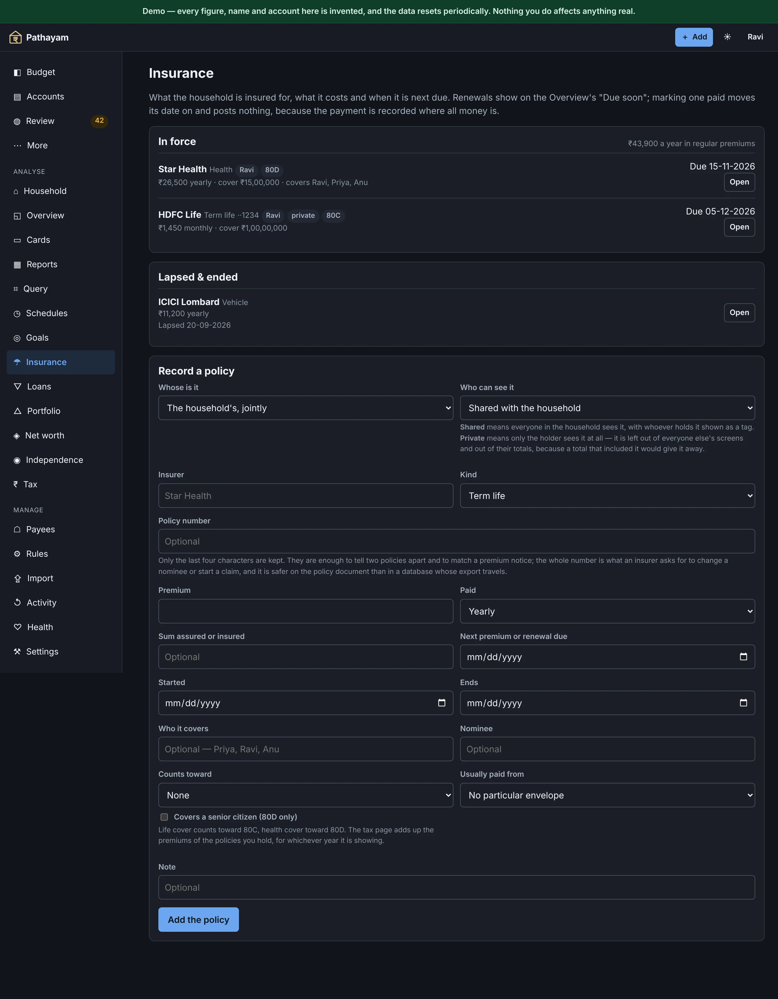

Features
A better outcome for your income.
The newest thing first: ask an AI about your own figures. Then the engine, because the engine is the product, and how money gets in, which is the part that decides whether a budgeting app survives month three.
New · Connect an AI
Ask Claude, ChatGPT or Gemini about your money
Pathayam has a built-in MCP server, read-only by default, — the Model Context Protocol AI apps use to reach other software — at <your Pathayam address>/mcp. Connect an AI app to it, and ask about the household in your own words. The answers come from your own figures, worked out by the same arithmetic as the screens.
- Claude on claude.ai and in the Claude apps, Claude Code and Claude Desktop
- ChatGPT, through a custom connector
- Gemini CLI, and the Gemini app where Google offers custom apps
- Any other app that speaks MCP over HTTP
Self-hosted, and on the hosted Household and Power plans. Not on the Solo plan, where it is switched off.
We have ₹3 lakh spare. Can we prepay the home loan?
Pathayam loans loan_schedule cashflow
Yes, and the cash is there: after this month’s bills the savings account stays above ₹1,40,000.
- Keep the EMI, shorten the loan: 23 months sooner, ₹6,12,400 less interest
- Keep the tenure, lower the EMI: ₹3,180 a month less, ₹2,71,900 less interest
Interest under 24(b) falls with it, so next year’s deduction will be a little smaller.
And under the new regime, what would my tax be?
Pathayam tax_estimate
₹1,18,560 under the new regime, against ₹1,46,900 under the old — an estimate on the figures you entered, not advice.
Read-only unless you allow it
Nothing changes unless your instance turns AI changes on and you tick “allow changes” for one app. Then it can file, split and annotate transactions, and suggest new ones, assignments and transfers for you to approve in Review. It can never delete anything, and every change can be undone.
Private by member
Each connection sees exactly what the member who approved it sees: the household budget and their own. Another member’s private accounts never appear, not in a list, a total or a count — the same rules, from the same code, as every screen.
Masked by default
Account numbers, UPI IDs, phone numbers and PAN are masked before anything leaves, on every connection unless you turn it off for that one. It is best effort — a number typed into a memo in an odd shape can get through.
Every question, on record
The Connect an AI page lists what each AI app asked for and when. The answers are not stored. Disconnect any app with one click.
From claude.ai, ChatGPT or the Gemini app
- Add a custom connector in the AI app (Gemini calls it a custom app), and give it your address with
/mcpon the end. - The app sends you to Pathayam. Sign in as yourself, and approve it.
- Ask. It appears on the Connect an AI page, where you can disconnect it.
Sign-in is OAuth 2.1 with PKCE. Its access lasts an hour and renews while you keep it connected.
From Claude Code, Gemini CLI or Claude Desktop
Make a token on Settings → API tokens → Connect an AI. The page shows the token once, with the command to paste:
claude mcp add --transport http pathayam \
https://budget.example.in/mcp \
--header "Authorization: Bearer <token>"A hand-made token expires after 30, 90 or 365 days. Gemini CLI and a Claude Desktop config get their own ready-made lines.
What an AI reads is sent to that AI’s provider. Anything it asks for travels to Anthropic, OpenAI or Google to be answered, under their terms rather than ours. Self-hosted, nothing goes anywhere unless you connect something; disconnect it and it stops.
| Feature | What it does |
|---|---|
| Seven change tools, if you allow them | set_envelope split_transaction set_memo set_payee_default add_transaction assign_to_envelope transfer — offered only where the operator sets AI_WRITE and you allowed that app changes. With standard, the last three wait in Review for you to approve; with full they are made directly. Never deletes, never touches loans, investments, settings or members. At most 100 a day, each in Activity, and one button undoes an app’s whole day. |
| Seventeen read-only tools | overview accounts transactions budget_month spending loans loan_schedule portfolio realised_gains net_worth tax_estimate cashflow insurance goals financial_independence explain snapshot |
| Same figures as the screens | The tools call the functions the screens use, so an AI is never told a balance, a loan’s real cost or a tax figure the app would not show you. |
| Transactions, filtered and paged | Narrowed by account, envelope, payee, dates or amount, and handed over a page at a time. |
| Explain this number | An AI can ask where Ready to Assign or an envelope balance came from, and is given the events that produced it. |
| Two ways to connect | Sign in and approve from the AI app (OAuth 2.1 with PKCE, hour-long access that renews), or a hand-made token for a command-line or desktop client, expiring after 30, 90 or 365 days. |
| Masking | Per connection, on by default: account numbers, UPI IDs, phone numbers and PAN masked before anything is sent. Best effort, and the page says so. |
| Access log | Each question every AI app asked, with when, on the Connect an AI page. The answers are not kept. |
| Without connecting anything | Download an analysis summary from /export/analysis.json: a year of budget, spending by envelope, accounts, loans, portfolio and tax, without the transaction list. Paste it into any chat, or open it in a spreadsheet. |
GuidesConnect Claude, ChatGPT or Gemini · The MCP server in the API reference
Give every rupee a job
Income arrives and you hand it out. When Ready to Assign reaches zero the month is decided — and next month opens with every leftover, and every overspend, already carried forward.
- Rollover under whichever overspend model you chose
- Overspending shown, never hidden
- Both models ship, and switching re-derives your whole history
GuidesBuild your first budget · Assign, move and hold · When you go over

| Feature | What it does |
|---|---|
| Two overspend models | Reduce next month's Ready to Assign, or carry a negative category balance. Switchable, and switching re-derives every month since. |
| Cover overspend | One tap to move from another envelope, with ranked suggestions for where to take it from. |
| Add-on cards | One member's card on another's account: one balance, one statement, one payment — but every transaction records which card and whose. |
| Targets and auto-assign | Fund every target in the order you arranged the budget, so what matters is funded first and the shortfall lands where you can see it. |
| Hold for next month | Park income for next month until you are a full month ahead. When a spare month is sitting unassigned, the app says so. |
| Forward recompute | Edit any past month and every month since re-derives under the active model, as one undoable batch. |
| Explain this number | Ready to Assign and every category balance drill into the events that produced them. |
Cards stop being a surprise
Spending on a card moves money into its payment envelope the moment the charge lands, so the cash to clear the bill is already set aside. One screen ranks every card by what falls due next.
- Owed, set aside, and what has nothing behind it
- Statement amount, date, due date and minimum
- A shortfall is never reported larger than the card owes
- Every charge tagged with the statement cycle it bills in
- Convert a purchase to EMI, name it after what you bought, and the card stops asking for it twice
- Each instalment's interest carries the 18% GST the issuer adds, as its own card charge
GuidesCredit cards

Or keep your money separate
Most households pool everything, and that is the default. For the ones that would rather not, each of you can keep your own accounts and put an agreed amount toward the shared bills — without a rupee moving between accounts, and without telling anyone what it came out of.
- A budget of your own, with its own envelopes and its own Ready to Assign
- Private accounts and cards — genuinely private, not just hidden from a list: out of totals, exports and the activity log too
- Commit ₹40,000 a month by assigning it, not by transferring it
- Pay a shared bill from your own account and your commitment falls
- Shared cards, add-on cards and split receipts all land in the right budget
- Reports and Query ask whose money, rather than assuming
- Leaving is handled: nothing is deleted, and the balance between you is settled first
GuidesKeeping money separate

Nobody is in debt to their partner
If you have paid for more of the household than you put aside, you are ahead — not a creditor, and your partner is not in default on the electricity. A lopsided month can end three ways, and the app is careful that they are not the same thing.
- Put it down to me — your share this month was simply larger
- I'll pick it up — the other of you commits it instead
- Call it even — the only one that lets something go, and it becomes ordinary spending on the giving side, because the money still has to come from somewhere
GuidesSquaring up a month
Money gets itself in
Drop in a statement and it is parsed, checked against its own closing balance, and queued for you. Nothing posts itself — but nothing needs retyping either.
- Twelve Indian banks, password-protected PDFs included
- Bank alerts become review rows within seconds
- File a payee twice and a rule is proposed, never applied silently
GuidesImport statements · The review queue · Rules and automatic filing

| Feature | What it does |
|---|---|
| Statement PDFs | Twelve banks plus broker contract notes. Password-protected files are opened in-process: no external tool, no library. |
| Password derivation | Work the password out from your saved name, date of birth, PAN, mobile or card digits, so nobody types one. Axis and HDFC account statements open with the customer ID you save in Settings, and HSBC card statements with the card’s last six. A card statement locked with digits its account lacks asks for them on import, and keeps them for next time. Opt-in, shown masked, never exported, never logged. |
| Reconciliation check | Every parse is verified against the statement's own closing balance. On a real 848-row statement it reconciles to the paisa. |
| CSV import | Header detection, Indian amount formats, a Dr / Cr column beside an unsigned amount, UPI narration extraction, saved per-bank column mappings. When the dates could be day or month first, it asks how they are written. |
| Coming from YNAB or Actual | Their CSV exports are recognised on the Import screen. Match their accounts to yours once, and the history lands in Review with transfers and splits intact. Transactions only: budgets and targets are set up here. |
| Consolidated statement | The monthly CAS is the primary way holdings get in. Rows reconcile against existing lots rather than duplicating. |
| SafeGold statements | Digital gold, read from SafeGold’s monthly PDF — uploaded, dropped on Import or fetched from Gmail. Buys become lots with GST in the cost, sells realise gains, and the rows are checked against the closing gold balance. A re-import adds nothing. |
| Five dedupe tiers | Exact, strong by reference, probable, weak, and manual-versus-imported — so one purchase never lands twice from an alert, an email and a statement. |
| Gmail ingestion | Opt-in, read-only. Reads only the banks' own addresses; an alert becomes a review row in seconds. When a statement arrives locked and the bank wants card digits you have not saved, each such card is listed with a box to enter them. |
| Receipts | A photo or PDF per transaction, stored in the database and served so no device caches it. |
Ask it anything, get the real total
One table you can filter, group and export. The totals cover every row that matched, not the rows that happened to fit on screen — a distinction that turns out to matter.
- CSV export carries the same figures you saw
- Charts are server-rendered SVG; no charting library, no tracking
- Every computed figure can explain itself
GuidesQuery and export · Reports

| Feature | What it does |
|---|---|
| Query | One filterable, groupable table everything else drills into. Totals sum every matching row — the page you see is a page, and says so. |
| Reports | Income against spending, category trends, loan interest by financial year, realised gains split by holding period. |
| Schedules and cashflow | Recurring items and money coming in, with detection, editable and deletable; marking one paid or arrived posts the transaction. A forward projection answers whether the balance holds to the 30th. |
| Month close | What the month did, where the change in net worth came from, a dated snapshot, and whether next month is funded. Prints as a document. Locks nothing. |
| Search | Across cleaned and raw imported text, from anywhere. |
| Printing | The tax estimate, reports, month close, net worth and a loan’s schedule print as documents: no navigation or buttons, light colours whatever the theme, numbered pages, and a footer saying whose figures they are and when they were made. |
Understand what the loan actually costs
A flat rate quoted at 11% is not 11%. The app shows the equivalent reducing rate, the lifetime interest, and exactly what a prepayment buys you — in months and in rupees.
- Tenure reduction against EMI reduction, side by side
- Instalments carry the lender's own principal and interest split
- Drift surfaced when your projection and theirs diverge
GuidesLoans

| Feature | What it does |
|---|---|
| Interest models | Reducing balance and flat rate, with the equivalent reducing rate shown whenever a lender quotes flat. |
| Disbursements | Per-tranche destinations: a builder-paid tranche raises the liability only; a personal loan into savings arrives as income. |
| Prepayment | Tenure against EMI as the headline comparison, with interest saved and instalments saved. Reducing tenure is the default. |
| Rate resets | Both options a lender must offer, priced at the rate you type against the balance you actually have — and the one you pick is the one applied. |
| Foreclosure | Settling early records the lender's charge against an account and an envelope, so the saving you compare against is the one actually on offer. |
| The EMI is budgeted | A loan's payment envelope carries a monthly target equal to its EMI from the day the loan exists, rate changes move it, and closing the loan clears it. |
| Drift | The app projects, the lender reconciles. When the two disagree, it says so rather than silently adopting either. |
| Card EMIs | A purchase turned into instalments becomes its own loan on the card, with the processing fee and its GST charged up front and 18% GST on each instalment’s interest posted as a separate card charge, as the statement shows it. |
| Family lending | Lent and borrowed, derived balances, write-off. |
| Merging envelopes | Two categories that turned out to be one. Assignments are added month by month rather than one of them being dropped, so the balance survives and the books still balance — asserted by a test, not hoped for. |
The whole picture, without polluting the budget
Holdings as units with real lots, and net worth split into what you saved, what the market did and what you paid off — parts that add up to the change. None of it is allowed anywhere near the budget screen.
- XIRR as the headline return, not a naive percentage
- Selling shows the exact lots it will consume before you confirm
- Unrealised gains are never income
- A financial-independence target built from what you actually spent
GuidesPortfolio · Net worth · Independence · Tax · Hand-valued assets

Deposits that value themselves
Give a fixed deposit, a recurring deposit, a PPF or an EPF its terms once, and it is worth what the arithmetic says on any day you ask — no passbook figure to retype every quarter.
- Principal or monthly instalment, rate, compounding, start, maturity and payout
- PPF and EPF interest worked out month by month and credited each 31 March
- The maturity shows on the account page, the cashflow calendar and the Overview
- A passbook figure dated on or after the terms still wins, until the next contribution
- Nothing is posted at maturity: you record the money where it lands
GuidesHand-valued assets · An asset’s life

When could you stop?
A target from what the household actually spent over the last year, against only the assets that could pay for it.
- Spending is money leaving your envelopes, not a figure you guess
- A home counts towards net worth, not here
- Provident funds locked until 58–60 are counted apart, with the gap they leave
- Everything it left out is listed, with the reason
GuidesIndependence

| Feature | What it does |
|---|---|
| An asset's history, readable | Gold bought, added to, revalued and half sold shows as a register on its own account page — date, what happened, the change, what it is worth. Nothing is overwritten, so what you thought it was worth in March is still there in December. |
| Hand-valued assets, over their whole life | Buy gold, buy more of it, revalue it, sell some or all of it — each recording both halves, the value and the money. Selling part keeps the account open at what is left, which is what selling a few grams actually is. Buying asks where the cash came from, so net worth never rises out of nothing. |
| It tells you when it disagrees with itself | A demat account, a loan and a hand-valued asset show a figure derived rather than counted, so a transaction entered against one used to vanish. Those accounts are no longer offered when adding a transaction, and any gap already there is reported next to the total. |
| Rules that build a value | A rule can write UPI ref {reference} into the memo and get the actual reference, rather than the same constant on every row. Substitution only — no expressions, so a rule cannot loop or be fed something hostile from a statement. |
| Split as you enter it | One payment across several envelopes, on the entry form rather than only when editing — a supermarket bill that is half groceries and half household. The first envelope takes whatever the others leave, so the lines cannot disagree with the total. |
| Transfers that cost something | An IMPS fee, a demat charge, a conversion markup. It leaves the sending account on top of the amount so the balance still matches the statement, and it lands in an envelope because it is spending. |
| Schedules that split | A salary into provident fund, tax and what actually landed; rent into rent and maintenance. The remainder is worked out for you, so a recurring split cannot be quietly wrong every month — and on a salary you can name just the pieces that have a home and let the rest land in Ready to Assign. |
| Financial independence | A target from a trailing year of real spending, divided by a withdrawal rate you set. Counts only assets that can actually be drawn down — a home is on the net-worth statement, not here — and lists what it left out, with the reason. |
| The provident-fund bridge | EPF and NPS cannot be touched before 58–60. They are counted apart, and the years between stopping and that unlock are reported as a gap the drawable corpus has to cover alone. |
| Units and lots | Holdings as units with FIFO lots, so cost basis, the realised split and XIRR are derived rather than estimated. |
| Price feeds | Mutual funds and currency refresh from keyless public APIs; equities use a free-tier key. Every price carries its date. |
| Hand-valued pots | Gold, retirement, anything outside the consolidated statement — all updated in one sitting. A deposit given its terms values itself: the same screen shows its computed figure, and a figure typed there still wins until the next contribution. |
| Net worth | The figure with its as-of date and history, counting money owed to family and other liabilities beside loans and cards. The change is split into money saved, market movement, exchange rate, debt repaid, other assets, and what was repaid to family and on other liabilities — and the parts add up to the total. Snapshots taken before the last two were recorded say so, rather than hiding the difference. |
| The firewall | Portfolio value never appears on the budget screen, in any form. Growth is not income, and that is an acceptance test. |
Tax, from what is already in the books
Both regimes side by side for one financial year, drawing on what the books already hold: home-loan interest, capital gains, the tax you have paid and your insurance premiums. An estimate, not a return and not advice.
- Home-loan interest under 24(b) from the loans you mark lived in
- TDS, advance and self-assessment tax netted to a balance due or a refund
- Each advance-tax instalment checked against what was paid by its date
- Capital gains at their own rates, in the period they were sold in
- Employer NPS under 80CCD(2), in both regimes
- Prints as a document, caveat included
GuidesTax

Every policy, and when it is next due
Term, health, vehicle and home cover in one register: what each costs, what it covers, and when the next premium falls due.
- Renewals show in the Overview’s “Due soon”
- Marking a premium paid moves the date on and posts nothing — the payment is already in the bank’s record
- Lapsed and ended policies kept apart from those in force
- Only the last four characters of a policy number are kept
- Premiums grouped under 80C and 80D are offered to the tax estimate

| Feature | What it does |
|---|---|
| Tax estimate | Both regimes side by side for one financial year, with 80C, 80D and the HRA exemption — and a plain list of what it does not model. An estimate on figures you enter and figures the ledger holds, not a return and not advice. |
| Home-loan interest | Mark a loan’s house as lived in or let out. A lived-in house’s interest for the year is deducted under 24(b) in the old regime, up to ₹2,00,000; a let-out house is shown and not deducted. The figure can be overridden. |
| Tax already paid | TDS from Form 16 and 26AS, and each advance or self-assessment payment with its date, are taken off the year’s tax to show what is left to pay or what comes back. |
| Advance tax dates | The four instalments — 15%, 45%, 75% and 100% by 15 June, September, December and March — when the year’s tax after TDS is ₹10,000 or more. Each is checked against what was paid by its date, with the shortfall. Interest under 234B and 234C is named, not worked out. |
| Capital gains, taxed properly | Sorted by asset class and holding period, then taxed at their own rates — 12.5% above the ₹1,25,000 exemption on long-held equity listed in India, 20% short, 12.5% on a listed bond held over a year, slab rates on debt and foreign shares held under two years. 2024-25 is split at 23-07-2024: a sale before it is taxed at the old rates. A year it has no rates for is refused, and anything it cannot place it refuses to place, and says why. |
| 80C and 80D from your policies | The premiums falling due in the year, grouped as 80C, 80D for the family and 80D for parents, are shown beside the figures you typed. Applying them fills the form; it is yours to save. |
| Insurance register | Each policy’s insurer, kind, cover, premium and frequency, who it belongs to, and whether it is in force, lapsed or ended. A private policy is its holder’s alone. |
Built to be run by one household, for years
Operational things that only matter once you depend on it.
GuidesActivity and undo · Backups and health · Settings and tokens
Everything undoes
Thirty days, on every action, from an append-only log. Where a later edit touched the same record it shows what it would discard first, and refuses outright when the record is load-bearing.
Backups that are proven, not assumed
A scheduled job restores the latest backup into a scratch database and compares control totals. A backup nobody has restored is a hope, not a backup.
Privacy that is tested, not promised
Three separate checks hold the line: every screen rendered as the wrong member, every function that can name a viewer required to, and every addressable thing asked for by somebody who should not have it. Each was written after a leak the others could not see — including a receipt that downloaded byte for byte.
Nothing leaves without you
No telemetry, no analytics, no crash reporting. Bank access is read-only and opt-in; AI access is opt-in, and read-only unless you allow changes, and the statement identity is excluded from every export by a test that asserts it.
| Feature | What it does |
|---|---|
| Sign in without anybody else | A password hashed with scrypt, stored in its own table and never included in an export — or your own identity provider: Authelia, Authentik, Keycloak, anything speaking OpenID Connect, configured with one issuer URL. Google stays optional. Nothing about running this requires an account with a company. |
| Sign-in | Google SSO against a closed allow-list, enforced on every request. The provider must say it has verified the email, or the sign-in is refused. |
| Writes stay at home | A change sent from a signed-in browser must be addressed to the host in BASE_URL, or to an IP address or localhost; anything else gets a 403. That stops a page elsewhere re-pointing its own name at your server and writing to it. |
| Impersonation | Read-only “view as” another member, always logged, writes behind an explicit toggle. |
| API tokens | Scoped read or read-write, shown once, stored as a hash, and structurally unable to sign in, mint more tokens, set a password, sign out devices or link Gmail. |
| AI connections | Read-only unless the operator allows changes and you tick “allow changes” for one, every change logged and undoable; reading as the member who approved them, masked by default and logged question by question. Disconnect one and its token stops working. How it works. |
| Universal undo | Thirty days, from an append-only log. The undo is itself an entry — nothing is edited or deleted. |
| Verified restore | A scheduled job restores the latest backup into a scratch database and compares control totals. Failure fires a webhook. |
| Modules you can switch off | Eighteen of them, one environment variable each — loans, investments and net worth, insurance, goals, tax, reports, schedules, rules, receipts, each import path, Gmail, API tokens, AI connections and more. A module that is off disappears from every screen and keeps its data. What each plan includes. |
| Goals | Long-horizon savings with their own envelopes, a target amount and an optional date, shown as progress against both. |
| Schedules | Recurring bills and income, with a sixty-day cashflow calendar showing what lands when and where the balance dips. |
| Month close | A monthly ritual that records income, spending and what was assigned, takes a net-worth snapshot, prints, and can be reopened. |
| Reconciliation | Check an account against the bank’s balance on a date. The checkpoint breaks if anything before it changes later, and says so. |
| Receipts | Photos or PDFs attached to a transaction, stored in the database rather than on disk, and downloaded rather than rendered. |
| Tags | Free labels on transactions, and a tag can carry its own budget over a date range — useful for a trip or a project. |
| Search and query | One box for everything, and a filterable table whose totals cover every matching row rather than the page you can see. |
| Reports | Income against spending, category trends, a spending calendar, where the month’s money went, loan interest and realised gains by financial year. |
| Privacy | Private accounts, envelopes and loans stay out of other members’ lists, reports, exports, activity log and totals. Three automated checks hold it. |
| Themes | Light, dark or follow the system, applied in the first response so the wrong one never flashes. |
| Installable | Add it to a phone’s home screen or a desktop dock. It needs the server for everything but the Add form: with no signal, an entry is kept on the device and sent when the connection is back, with a count on every page and a Send now button. The entry sits unencrypted on the device until it is sent, and signing out clears it. Nothing else works offline. |
What each plan includes
Self-hosting gets everything. The hosted plans differ in who it is for and what it keeps, not in how the budget works.
GuidePlans and modules · Pricing
| Self-host | Solo | Household | Power | |
|---|---|---|---|---|
| Members | Unlimited | 1 | Up to 5 | Unlimited |
| Budget engine, cards, rollover, month close | ✓ | ✓ | ✓ | ✓ |
| Statement import: CSV, PDF, YNAB and Actual | ✓ | ✓ | ✓ | ✓ |
| Insurance, goals, tax, reports, schedules, rules, receipts | ✓ | ✓ | ✓ | ✓ |
| Loans and lending in the family | ✓ | — | ✓ | ✓ |
| Investments, net worth, financial independence | ✓ | — | ✓ | ✓ |
| API tokens | ✓ | — | ✓ | ✓ |
| Connect an AI | ✓ | — | ✓ | ✓ |
| Gmail ingestion | ✓ | — | — | — |
| Backups you can restore from | Yours to keep | 30 days | 90 days | 1 year |
See the engine work in ten seconds
A live envelope grid running the same arithmetic as the app. Assign money, watch Ready to Assign fall, and push a category over to see what red means.
Try the live demo